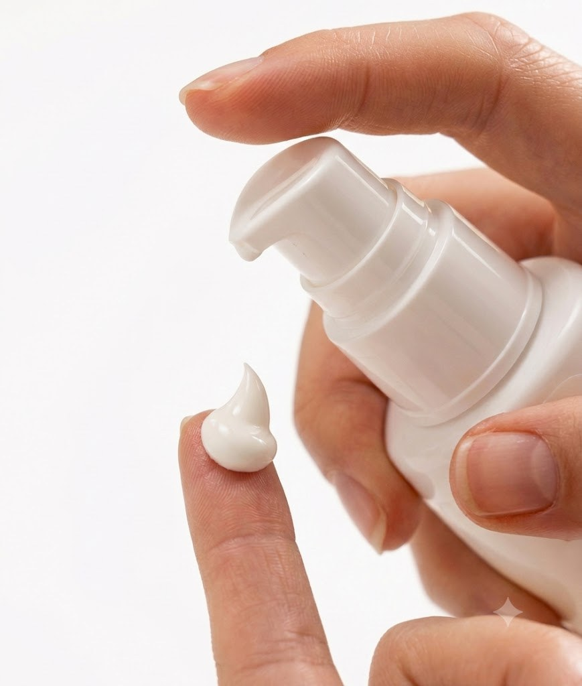

Ürün
görselleri
1 / 2 · Bir görsele tıkla: büyür

19. günVitamin C

8. günNemlendirici

Vitamin C+ Serum

17. günKolajen

Ürün gamı

Krem

26. günSPF 50+ Güneş
Ürün
görselleri
2 / 2 · Bir görsele tıkla: büyür

Nemlendirici & Tonik

Nemlendirici

10. günCC Krem

Nemlendirici

28. günTemizleme

28. günTemizleme

Serum

12. günGöz serumu
Bilgi
görselleri
Bir görsele tıkla: büyür

Vitamin C+ Serum

Nem ve bariyer

Leke bakımı

5. günTonik

24. günRetinol

10. günCC Krem
Doku
ve his
Bir görsele tıkla: büyür

5. günTonik

28. günTemizleme

28. günTemizleme

28. günTemizleme

Serum dokusu
Ok tuşları veya tıklama ile ilerle